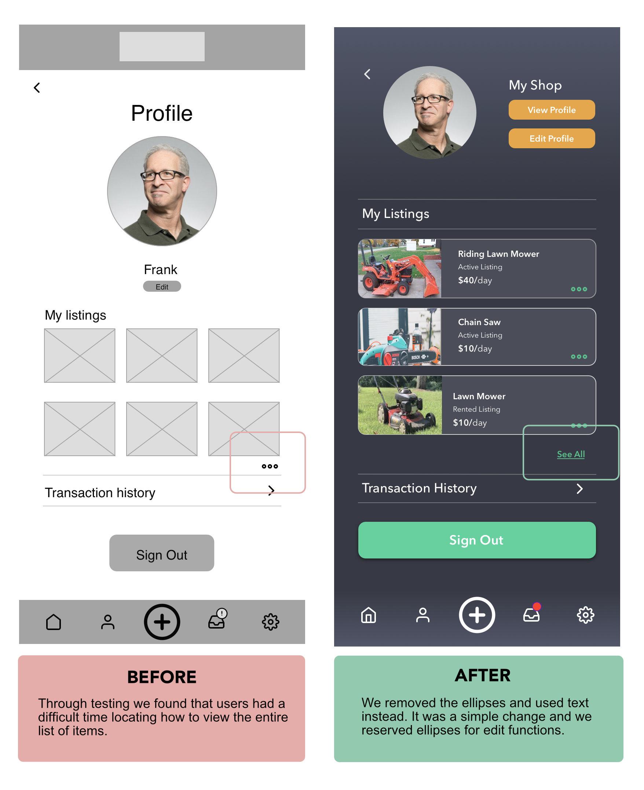

Rent-All
Design process for an app that enables people to make money by renting out their unused household items.

Design process for an app that enables people to make money by renting out their unused household items.
In today's economy, many people have valuable items sitting unused in their homes while others need temporary access to those same items. Traditional rental markets are limited to large companies and don't provide individuals with an easy way to monetize their unused belongings.
How might we create a trusted platform that allows people to easily rent out their unused household items to neighbors and community members?
We conducted user interviews with potential renters and rentees to understand pain points, motivations, and concerns around peer-to-peer item sharing.
Based on our research, we identified two primary user types that would benefit from this platform.
Busy professional who needs occasional access to tools and equipment but doesn't want to purchase items she'll rarely use. Values convenience and reliability.
Homeowner with expensive tools and equipment that sit unused most of the time. Interested in generating passive income from his belongings.
We followed a user-centered design approach, iterating based on user feedback throughout the process.
The final design addressed all major user concerns while maintaining simplicity and ease of use. The app allows users to both list their items for rent and discover available items in their neighborhood.
User testing showed significant improvement in task completion rates and user satisfaction compared to our initial concepts.